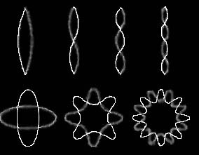
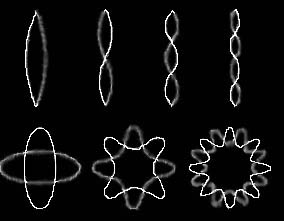

W celu lepszego rozumienia otaczającej nasz rzeczywistości ludzie od zawsze tworzyli modele (teorie) mające nam ją tłumaczyć i przybliżać jej strukturę. Tak też od pierwszych jej opisów - najróżniejszych mitologii, przez systemy filozoficzne i rozwój nauki, dotarliśmy do naszego obecnego jej pojmowania. Dziś rzeczywistość tłumaczymy za pomocą dwóch wielkich teorii fizycznych - Ogólnej Teorii Względności Einsteina i Mechaniki Kwantowej. Pierwsza z nich tłumaczy nam zjawiska w skali makro, druga natomiast w skali mikro. Problem pojawia się, gdy próbujemy te dwie teorie połączyć ze sobą w celu utworzenia jednej spójnej teorii opisującej wszystkie zjawiska we Wszechświecie - Teorii Wszystkiego. To właśnie ona znajduje się na celowniku badań fizycznych od przeszło 50 lat. W tym czasie powstało wiele teorii pretendujących do miana Teorii Wszystkiego. Żadna z nich nie spowodowała jednak tak wielkiego poruszenia jak Teoria Superstrun zaproponowana w swojej pierwotnej formie w 1970 roku i od tego czasu rozwijana. Jest ona tak niezwykle skomplikowana i tak niesamowita, że fizycy nadal jej całkowicie nie rozgryźli. Prezentuje jednak tak ciekawy i rewolucyjny sposób patrzenia na świat, że warto się z nią zapoznać, nawet będąc laikiem w tych dziedzinach. Czym jest więc ta kandydatka na Teorię Wszystkiego?
Według Ogólnej Teorii Względności czas i przestrzeń tworzą jeden byt nazwany czasoprzestrzenią, jest ona 4-wymiarowa z trzema wymiarami przestrzennymi i jednym czasowym. OTW opisuje również grawitacje, które jest według niej własnością czasoprzestrzeni - jej zakrzywieniem, powodowanym przez wszystkie obiekty posiadające masę - im większa masa, tym większe zakrzywienie. Mechanika Kwantowa dostarcza nam za to wgląd w świat cząsteczek elementarnych, w postaci Modelu Standardowego. Z cząstek tych składa się cały otaczający nas świat - zarówno materia jak i oddziaływania. Dzielą się one na dwie podstawowe grupy: fermiony, czyli cząsteczki materii oraz bozony, czyli cząsteczki oddziaływań. W modelu tym zawierają się wszystkie znane oddziaływania poza grawitacją. Tu właśnie pojawia się problem, powodujący sprzeczność pomiędzy Mechaniką Kwantową i OTW. Gdy bowiem staramy się zastosować obie te struktury do ekstremalnych warunków zachodzących np. w momencie Wielkiego Wybuchu, czy w osobliwości czarnej dziury otrzymujemy sprzeczności. OTW i Mechanika Kwantowa zwyczajnie nie pasują do siebie, co jest dziwne, gdyż opisują ten sam Wszechświat.
Tu na scenę wkracza Teoria Superstrun (nazywana też Teorią Strun). Według niej cząsteczki elementarne, które w Modelu Standardowym są 0-wymiarowymi punktami, tak naprawdę są 1-wymiarowymi strunami. Struny te mogą występować w postaci strun zamkniętych (pętli) bądź otwartych. Według TS, właściwości cząsteczki reprezentowanej przez daną strunę objawiają się we wzorze jej drgań. Tak więc świat cząstek elementarnych składa się tak naprawdę z drgających strun, których wzory rezonansowe determinują za jaką cząsteczkę je postrzegamy. Cała plejada różności, których doświadczmy na codzień w otaczającym nas świecie, jest więc na poziomie elementarnym identycznymi strunami, różniącymi się jedynie wzorami drgań. Czyż nie ma w samej tej jakże prostej idei czegoś pociągającego i niesamowitego zarazem?

Co najważniejsze Teorii Strun udaje się zjednoczyć OTW i Mechanikę Kwantową. Wśród wzorów rezonansowych strun, oprócz wszystkich znanych fermionów i bozonów, znajduje się bowiem również poszukiwany grawiton, cząstka elementarna odpowiadająca za grawitację. Co również ciekawe, wychodząc od tego jednego prostego założenia, że cały Wszechświat składa się z małych drgających strun można dotrzeć do wniosków w postaci wielkiej matematycznej struktury. Teoria Strun postuluje bowiem, że otaczający nas świat ma nie 3 wymiary przestrzenne i 1 czasowy, a 9 przestrzennych i 1 czasowy. Wszystkie one są bowiem potrzebne, by drgające elementarne struny posiadały właściwości znanych cząstek. Gdzie znajduje się zatem tych 6 niedoświadczanych przez nas wymiarów przestrzennych? Tu zaczyna się robić ciekawie.
Teoria Strun mówi bowiem, że wymiarów tych nie dostrzegamy, gdyż są one zwinięte do rozmiarów tak mikroskopijnych, że są niemożliwymi do zbadania. Jednak podczas gdy dla nas wymiary te są obce, dla elementarnych strun są one normalnym, otaczającym ich światem. Elementarna Struna jest na tyle mikroskopijna (wielkości długości Plancka) by móc istnieć w tych dodatkowych wymiarach, tak więc może ona również w nich drgać. My natomiast nie dostrzegamy tych zwiniętych wymiarów, gdyż są ono zwyczajnie za małe, byśmy mogli wejść z nimi w interakcję w świecie makroskopowym. Trzeba również pamiętać, że zwinięte wymiary znajdują się w każdym miejscu w przestrzeni, tak jak i wszędzie dostrzegamy 3 znane nam kierunki.

Przez lata swojego istnienia Teoria Strun napotkała wiele przeszkód, jednak teoretycy strun nie poddają się i dalej dążą do jej doskonalenia. Wielkim atutem, ale i zarówno przeszkodą dla fizyków, Teorii Strun jest to, że jej struktura matematyczna jest zbyt skomplikowana, byśmy przy obecnych możliwościach mogli ją w pełni zrozumieć, zamiast tego musimy się posługiwać metodami przybliżonymi, które nie pozwalają nam w pełni poznać i zbadać tej niesamowitej teorii. Z drugiej strony znaczy to, że poprzez TS sięgamy bezpośrednio w przyszłość naszego pojmowania Wszechświata i mimo, że nie posiadamy jeszcze odpowiednich narzędzi, już odkryliśmy coś ponad nami. Świadczy to za tym, że mimo jej skomplikowania, powinniśmy przeć do przodu w celu poznania niesamowitego obrazu Wszechświata, jaki Teoria Strun przed nami maluje.
Na tej właśnie drodze poznania TS powstała jej udoskonalona wersja - M-teoria. Według M-teorii czasoprzestrzeń ma aż 11 wymiarów. Łączy ona 5 różnych wersji Teorii Strun i supergrawitację w jedną niesamowitą strukturę. Samo „M” w nazwie M-teorii pochodzi od angielskiego słowa „mysterious”, co oznacza „tajemnicza”. Nie wiemy czego spodziewać się po tym niezwykłym narzędziu teoretycznym, które dostaliśmy w swoje ręce, ale możemy mieć nadzieję, że przyniesie nam ono wiele nowych informacji o naszym pięknym Wszechświecie, a może okaże się Teorią Ostateczną.
Niestety z obecnymi możliwościami badawczymi nie posiadamy możliwość sprawdzenia czy potwierdzenia Teorii Strun. Elementarne Struny są bowiem zbyt małe byśmy mogli je zbadać. Również fakt, iż nie posiadamy jeszcze całościowej matematycznej struktury TS nie pozwala nam na wysnucie żadnych większych wniosków, które moglibyśmy zbadać. Pozostaje tylko wierzyć, że okaże się ona poprawna.
Sama Teoria Strun jest jednak tak niesamowitą strukturą teoretyczną, że nawet jeśli nie opisuje naszego Wszechświata, stanowi ona jeden z najwspanialszych pomysłów człowieka, jaki kiedykolwiek powstał. Jeśli jednak Teoria Strun jest poprawna, można jedynie paść na kolana przed tym pięknym Wszechświatem, w którym dane jest nam żyć.
Na potrzeby tego artykułu nie będę się bardziej zagłębiać w piękno Teorii Superstrun, jeśli jednak zaintrygowała Cię ta idea zachęcam do przeczytania książki Briana Greene’a „Piękno Wszechświata: Superstruny, ukryte wymiary i poszukiwanie teorii ostatecznej”. Otaczający nas Wszechświat jest bardziej niezwykły niż możemy sobie to wyobrazić, a dzięki Teorii Strun, jesteśmy w stanie dostrzec proste piękno świata wokół nas jeszcze bardziej.
IN
Tu na scenę wkracza Teoria Superstrun (nazywana też Teorią Strun). Według niej cząsteczki elementarne, które w Modelu Standardowym są 0-wymiarowymi punktami, tak naprawdę są 1-wymiarowymi strunami. Struny te mogą występować w postaci strun zamkniętych (pętli) bądź otwartych. Według TS, właściwości cząsteczki reprezentowanej przez daną strunę objawiają się we wzorze jej drgań. Tak więc świat cząstek elementarnych składa się tak naprawdę z drgających strun, których wzory rezonansowe determinują za jaką cząsteczkę je postrzegamy. Cała plejada różności, których doświadczmy na codzień w otaczającym nas świecie, jest więc na poziomie elementarnym identycznymi strunami, różniącymi się jedynie wzorami drgań. Czyż nie ma w samej tej jakże prostej idei czegoś pociągającego i niesamowitego zarazem?

drgające struny
Co najważniejsze Teorii Strun udaje się zjednoczyć OTW i Mechanikę Kwantową. Wśród wzorów rezonansowych strun, oprócz wszystkich znanych fermionów i bozonów, znajduje się bowiem również poszukiwany grawiton, cząstka elementarna odpowiadająca za grawitację. Co również ciekawe, wychodząc od tego jednego prostego założenia, że cały Wszechświat składa się z małych drgających strun można dotrzeć do wniosków w postaci wielkiej matematycznej struktury. Teoria Strun postuluje bowiem, że otaczający nas świat ma nie 3 wymiary przestrzenne i 1 czasowy, a 9 przestrzennych i 1 czasowy. Wszystkie one są bowiem potrzebne, by drgające elementarne struny posiadały właściwości znanych cząstek. Gdzie znajduje się zatem tych 6 niedoświadczanych przez nas wymiarów przestrzennych? Tu zaczyna się robić ciekawie.
Teoria Strun mówi bowiem, że wymiarów tych nie dostrzegamy, gdyż są one zwinięte do rozmiarów tak mikroskopijnych, że są niemożliwymi do zbadania. Jednak podczas gdy dla nas wymiary te są obce, dla elementarnych strun są one normalnym, otaczającym ich światem. Elementarna Struna jest na tyle mikroskopijna (wielkości długości Plancka) by móc istnieć w tych dodatkowych wymiarach, tak więc może ona również w nich drgać. My natomiast nie dostrzegamy tych zwiniętych wymiarów, gdyż są ono zwyczajnie za małe, byśmy mogli wejść z nimi w interakcję w świecie makroskopowym. Trzeba również pamiętać, że zwinięte wymiary znajdują się w każdym miejscu w przestrzeni, tak jak i wszędzie dostrzegamy 3 znane nam kierunki.
wymiary zwinięte do postaci przestrzeni Calabiego-Yau
Przez lata swojego istnienia Teoria Strun napotkała wiele przeszkód, jednak teoretycy strun nie poddają się i dalej dążą do jej doskonalenia. Wielkim atutem, ale i zarówno przeszkodą dla fizyków, Teorii Strun jest to, że jej struktura matematyczna jest zbyt skomplikowana, byśmy przy obecnych możliwościach mogli ją w pełni zrozumieć, zamiast tego musimy się posługiwać metodami przybliżonymi, które nie pozwalają nam w pełni poznać i zbadać tej niesamowitej teorii. Z drugiej strony znaczy to, że poprzez TS sięgamy bezpośrednio w przyszłość naszego pojmowania Wszechświata i mimo, że nie posiadamy jeszcze odpowiednich narzędzi, już odkryliśmy coś ponad nami. Świadczy to za tym, że mimo jej skomplikowania, powinniśmy przeć do przodu w celu poznania niesamowitego obrazu Wszechświata, jaki Teoria Strun przed nami maluje.
Na tej właśnie drodze poznania TS powstała jej udoskonalona wersja - M-teoria. Według M-teorii czasoprzestrzeń ma aż 11 wymiarów. Łączy ona 5 różnych wersji Teorii Strun i supergrawitację w jedną niesamowitą strukturę. Samo „M” w nazwie M-teorii pochodzi od angielskiego słowa „mysterious”, co oznacza „tajemnicza”. Nie wiemy czego spodziewać się po tym niezwykłym narzędziu teoretycznym, które dostaliśmy w swoje ręce, ale możemy mieć nadzieję, że przyniesie nam ono wiele nowych informacji o naszym pięknym Wszechświecie, a może okaże się Teorią Ostateczną.
Niestety z obecnymi możliwościami badawczymi nie posiadamy możliwość sprawdzenia czy potwierdzenia Teorii Strun. Elementarne Struny są bowiem zbyt małe byśmy mogli je zbadać. Również fakt, iż nie posiadamy jeszcze całościowej matematycznej struktury TS nie pozwala nam na wysnucie żadnych większych wniosków, które moglibyśmy zbadać. Pozostaje tylko wierzyć, że okaże się ona poprawna.
Sama Teoria Strun jest jednak tak niesamowitą strukturą teoretyczną, że nawet jeśli nie opisuje naszego Wszechświata, stanowi ona jeden z najwspanialszych pomysłów człowieka, jaki kiedykolwiek powstał. Jeśli jednak Teoria Strun jest poprawna, można jedynie paść na kolana przed tym pięknym Wszechświatem, w którym dane jest nam żyć.
Na potrzeby tego artykułu nie będę się bardziej zagłębiać w piękno Teorii Superstrun, jeśli jednak zaintrygowała Cię ta idea zachęcam do przeczytania książki Briana Greene’a „Piękno Wszechświata: Superstruny, ukryte wymiary i poszukiwanie teorii ostatecznej”. Otaczający nas Wszechświat jest bardziej niezwykły niż możemy sobie to wyobrazić, a dzięki Teorii Strun, jesteśmy w stanie dostrzec proste piękno świata wokół nas jeszcze bardziej.
IN